PM Workshop · Module 3 · Session 2
Project Nebula
Building self-learning agents with Claude Code
Continuation from Session 1 — context, memory, MCPs, skills, and custom tools.
Feb 2026 · Session 2
Before we start
Pre-requisites
Setup checklist
Claude Code installed, with Anthropic Console login completed.
One data-warehouse connection — Kusto / ADE in this example, but the workflow applies to Snowflake / BigQuery / Databricks too.
2–3 sample queries from that warehouse — copy them from one of your dashboards.
An email client for the email-skill exercise — Outlook (classic) for COM automation, or Gmail API / Apple Mail.
The agent may install libraries (Python, etc.) in your environment as needed.
⏱
As always — lots of patience
First-time installs and MCP wiring take a few minutes each.
Finding connection details

① "More actions" next to your cluster

② "Edit connection" → copy details
Your warehouse UI will look similar.
Claude Code · Data Warehouse · Email Client · Patience
Reminder
Graduation project
Identify tasks in your work that can be supercharged by introducing agent workflows.
Build an agentic system that can be leveraged by you or your team to improve productivity.
Claude Code
Copilot Studio
Or any other platform
Submit
Drop your ideas in the Module 3 — Agent graduation project board.
Continuation from Session 1 · Agent Series
Recap
We learned…
Definition
An agent is a system that pursues a goal by repeatedly:
01
Reasoning / Planning
→ Deciding what to do next
02
Acting on Environment (Tools)
→ Executing actions via tools
03
Updating Itself (Context/Memory)
→ Learning from results
What we built
An agent on Copilot Studio that had access to tools and reasoned over user requests to plan and use those tools to achieve the goal.
What was missing
Our agent could not learn from interactions and get better over time.
That's what Session 2 fixes.
What we'll cover today
Session 2 · Learning objectives
Concepts
Context & Memory
Understanding agent context, context window, and context engineering.
How agents can save context as memory.
Walkthrough
Introduction to Claude Code
Installation and walkthrough of Claude Code.
Best practices.
Self-guided exercise
Build a self-learning agent
Build an agent with skills, MCP connectors, and its own memory and context-retrieval system.
Share your skills in your team's skills library.
Part 1 · Concepts
Context & Memory
How agents stay focused on the right things — and remember what matters across turns.
Why context matters
Building AI systems is all about context
Context window
system
Agent instructions (keep light)
memory
memory.md — what Claude remembers about you
tools
Short descriptions of available tools
user
Your prompt
Too little context → response lacks relevance.
Too much context → window clogs, model loses focus.
Too much context → window clogs, model loses focus.
Heads-up
Context is a resource you must optimise.
We need context-engineering strategies that put the right information into the window at the right time.
From Session 1
Keep instructions light. Put detailed tool usage (e.g. "best practices for writing an email") inside the tool config, so the agent only loads it when it calls the tool.
Progressive disclosure
A core idea
Progressive disclosure
Don't load everything up-front. Let the agent discover what it needs, turn by turn.
Example · PPT generation
User asks to generate a PPT.
Default context only includes artefact_generator.md.
It tells the model to use ppt_generator.md.
ppt_generator.md loads brand & code modules on demand.
word_generator.md never referenced — saves context.
Keep a large library of skills; let the agent progressively discover the right pieces per task.
Loaded per turn
Turn 1
User prompt + short description of all tools
Turn 2
artefact_generator.md
Turn 3
ppt_generator.md
word_generator.md never referenced
Turn 4
brand_guidelines.md
ppt_generator.py
We will leverage this concept inside Claude Code with the /skills system.
A core idea
Memory — what carries across turns
When memory is blank
Turn 1
User prompt
LLM
Response
Turn 2
User prompt
LLM
Response +
save_to_memory
save_to_memory
When memory is updated with previous conversation
Turn 1
memory +
User prompt
User prompt
LLM
Response
Memory is prepended to the prompt — context flows from one turn into the next.
How it works
Most LLM systems load memory into every prompt.
They have built-in mechanisms to identify and update memory with relevant context — and users can also explicitly ask for things to be added.
Two paths in
Agent decides on its own (save_to_memory tool)
You ask: "remember this…"
Part 2 · Walkthrough
Introduction to
Claude Code
Claude Code
The CLI we'll use for the rest of the workshop.
Walkthrough · 01
What is Claude Code?
Definition
A CLI-based experience for connecting to Anthropic models.
Has access to your local filesystem.
Builds context graphs on your filesystem via progressive disclosure — it keeps learning and getting better.
Quick PowerShell tips
cd [folder] — navigate into a folder
cd .. — back to the parent folder
ls — list files in current folder
mkdir [name] — create a new folder
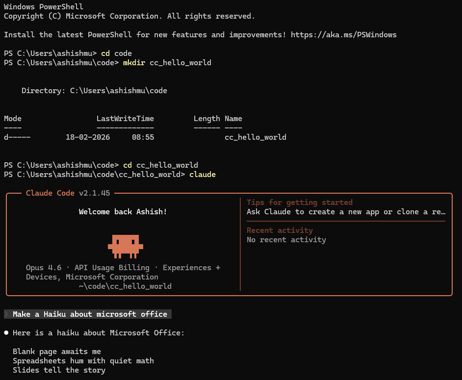
CLI
① Open
a folder
② Make
a folder
③ Launch
Claude
④ Run
a prompt
Walkthrough · 02
Options available within Claude Code
Typing / opens a dropdown — use ↑↓ to navigate.
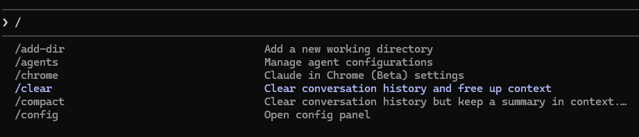
/ menu
Useful stuff
/clear — clears your context window
/compact — summarises current conversation to save space
/resume — continue a previous conversation
/exit — quit Claude Code
Will be used in today's session
/mcp — status of installed MCPs
/skills — list all available skills
/agents — create & manage agents
/tasks — see running task processes
/model — change the default model
/config — change overall settings
Esc — stops the current turn
Walkthrough · 03
Other ways to access Claude Code
Claude Code within VS Code
Available to all
Install the Claude Code extension within VS Code — useful to navigate folders and see files created inside the VS Code UI.
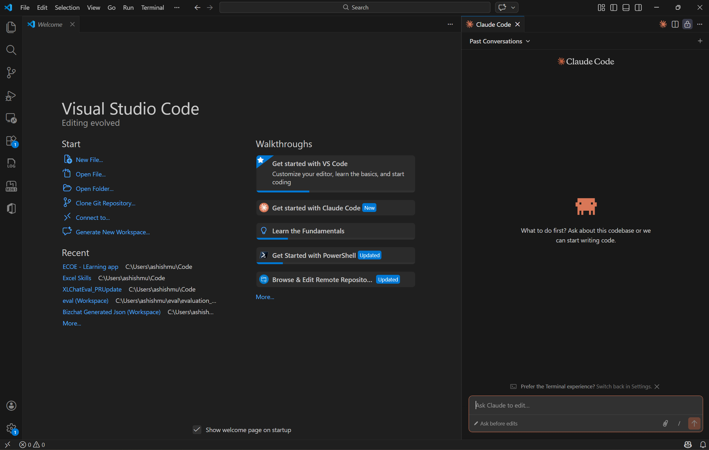
Install the Claude Code extension within VS Code.
Claude App
Restricted
Navigate to the Code tab within the Claude app. Currently not accessible for some enterprise tenant logins.
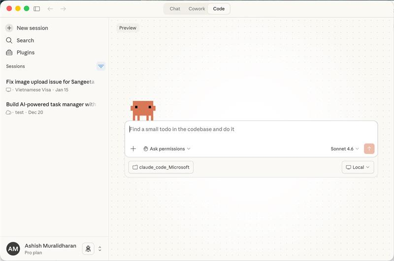
Navigate to the Code tab within the Claude app.
⚠
Important: Using the Opus model within VS Code is not the same as using the Claude Code extension within VS Code.
Walkthrough · 04
Claude Code's core purpose: agentic coding
Everything you learned in Module 1 (vibe coding) applies directly here.
Nebula tip
Exercise segments that require running a prompt are highlighted.
Try this out
01
Start Claude Code in an empty folder.
02
Run the prompt on the right.
Prompt
Make a hello world app with a working front end and back end
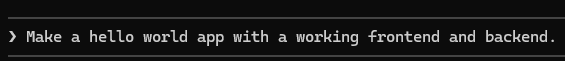
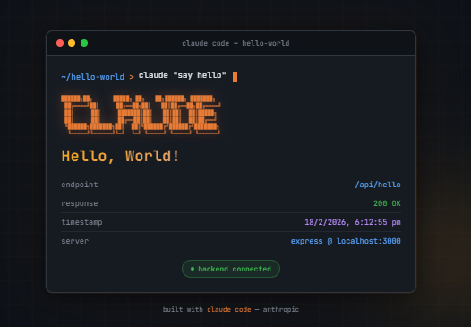
Walkthrough · 05
Context is Claude's superpower
claude.md
Loaded for every prompt
Lives in your root directory. Or just ask Claude to show it to you.
memory.md
Everything Claude remembers about you
Whatever you've asked Claude to remember — attached to every prompt.
Plus
Claude further manages context with additional strategies:
Progressive disclosure via the skills system
MCP tool wiring for external services
Sub-agents with isolated context windows
Compaction to keep long sessions alive
We'll deep dive into each of these.
Walkthrough · 06
A primer on key terminology
Four capabilities you'll touch today.
| Claude capability | Definition | Today's exercise |
|---|---|---|
|
Tool
MCPs
|
LLM protocol to connect with other products/services and perform actions. |
WorkIQ — fetch context from your work-graph (Microsoft Graph for M365; similar exists for Google Workspace). ADE MCP — explore your data warehouse (Kusto here; Snowflake / BigQuery / Databricks work the same way), run .KQL / SQL queries. |
|
Context
Skills
|
Re-usable context files (.md) that Claude can refer to when required. | Kusto-skill — a system to query insights from your warehouse with best practices and business rules baked in. |
|
Memory
memory.md
|
Everything Claude remembers about you. Attached to every prompt. | Personal context — key info about you and your work. |
|
Agent
Sub-agents
|
Claude can spawn multiple independent agents with their own context window. | Out of scope Skills subsume most of the advantages of agents — except their dedicated context window. |
Part 3 · Hands-on
Session 2
Learning exercise
Learning exercise
Memory, MCPs, and skills — wired into your Claude Code.
Exercise · 01 · Memory
Let's leverage Claude's memory
Let Claude know a little about you and the work you do.
What to do
Enter 4–5 important things you want Claude to know about you.
Things like your name, role, charter, team, and how you work.
From now on, Claude attaches these to every prompt automatically.
Once it's in memory.md, you never have to repeat yourself again.
Sample prompt
Remember the following in your memory:My name is [Placeholder] and I drive the [placeholder] charter.
I work with [placeholders] and report to [placeholder].
My …
Tip
Replace placeholders with your real details. Keep it concise — memory is loaded into every prompt.
Exercise · 02 · MCPs
MCPs extend Claude's context
MCPs connect Claude to external services — Notion, ADO, Kusto, Figma, etc. Use the connection to send/fetch context and invoke tools.
Let's explore the WorkIQ MCP
WorkIQ gives you read-only access to your work-graph — Teams messages, emails, people details.
WorkIQ MCP (Microsoft 365 work-graph); similar MCPs exist for Google Workspace and other ecosystems.
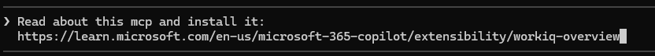
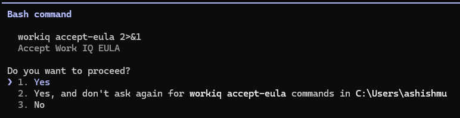
Four steps
01
Install WorkIQ
Prompt: Read about this mcp and install it <your MCP provider's documentation>
02
Accept the EULA
Approve the MCP's terms when prompted.
03
Check it's installed
Prompt: /mcp
04
Run it
Prompt: Use WorkIQ and give me a summary of my emails in the last 24 hours
Exercise · 03 · Skills
Skills help Claude build knowledge on how to do something
Central metaphor
In a kitchen, MCPs are the tools (knives etc.)
and Skills are the recipes.
What a skill is
A set of instructions that teaches Claude how to handle specific tasks or workflows.
Instead of re-explaining your preferences, processes, and domain expertise in every conversation — teach Claude once, benefit every time.
When skills shine
Skills are powerful when you have repeat tasks — the same query you run every Monday, the same brand guidelines you apply, the same review checklist you walk through.
Repeat
Standardise
Share
Best practice
Pair your MCPs with skills on how to use them
Same MCP, very different result — depending on whether Claude has the skill that tells it what your "important" looks like.
Without a skill for WorkIQ
Need to ask for what you need in detail.
If you ask "what's the latest messages on Teams?" — Claude doesn't know it should prioritise messages from your managers / LTs or specific important projects (unless you explicitly mention it).
"what's the latest messages on teams"
# → flat list, ranked by recency only
# → flat list, ranked by recency only
With a skill for WorkIQ
Claude knows your priorities and surfaces what matters.
For the same prompt, Claude prioritises important and relevant messages based on how you've taught the skill to rank them.
"what's the latest messages on teams"
# → manager + LT + Nebula thread first,
# → rest collapsed by topic
# → manager + LT + Nebula thread first,
# → rest collapsed by topic
MCP = the tool · Skill = the recipe for how you use it
Hands-on · Skill #1
Let's build your first skill on WorkIQ
Teach Claude once. Benefit every time you ask for a Teams debrief.
Prompt to Claude Code
Create a "teams-debrief" skill that fetches all messages in the last 24 hours on Teams and gives a summary.
Additionally, surface up messages from my manager along with all of my manager's direct reportees. Also look for any relevant messages on Nebula.
Additionally, surface up messages from my manager along with all of my manager's direct reportees. Also look for any relevant messages on Nebula.
Claude generates the skill
teams-debrief · SKILL.md
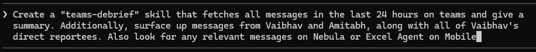
Skills that get better · Concept
Building a data analytics skill
Kusto used as the working example — same workflow applies to Snowflake, BigQuery, Databricks.
① Use a knowledge base
Have instructions in your skill to update a knowledge base every time it learns something.
② Save commonly used patterns
Have instructions to save query patterns that work well — so Claude doesn't rewrite them.
Updated by
i) User sharing learnings ·
ii) Claude learning by itself
Example · Kusto / ADE
Your knowledge base can include:
Business rules
Table schemas and table details
Cluster / connection details
Common mistakes to avoid
Commonly used patterns:
Re-usable .kql / .sql queries indexed for fast retrieval — so Claude doesn't rewrite the same metric query twice.
Skills that get better · Steps 1–3
Building a data analytics skill
Wire the MCP and CLI before you write a single line of skill logic.
01
Install Azure Data Explorer MCP
Or the equivalent MCP for your warehouse — Snowflake MCP, BigQuery MCP, Databricks MCP.
Prompt: I need to set up ADE MCP to connect to Kusto. Read this documentation and set up the MCP: [your data warehouse MCP docs]
02
Install Azure CLI and complete login
Or the equivalent CLI for your warehouse — SnowSQL, bq, Databricks CLI.
Prompt: Set up Azure CLI and complete the login
03
Exit Claude and close your terminal. Open a new terminal and start Claude again.
Verify
Restart your Claude instance and check installation success by typing
/mcp
You should see your warehouse MCP listed as connected.
Skills that get better · Steps 4–6
Building a data analytics skill
04
Check if your skill is created
Prompt: /skills
05
Share connection & cluster details
Prompt: Connect to this cluster and help me understand the data available [your warehouse URL]
06
Learn from existing queries
Prompt: I am sharing some queries that are already made. Learn about the tables, business rules and approach for key metrics and update your knowledge base.
→ Paste any existing queries
How to find your connection details
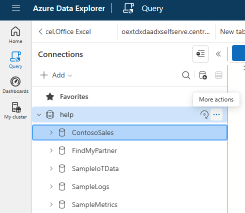
① Click "more actions" next to your cluster.
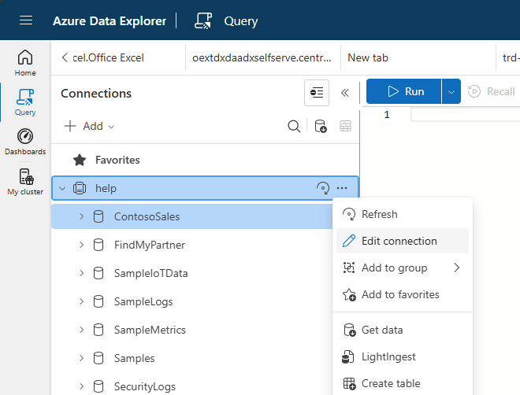
② Click "edit connection" and copy the details.
Your warehouse UI will look similar — the connection-string lookup is the same workflow.
Skills that get better · Steps 7–8
Building a data analytics skill
Now run the skill — and teach it what "good" looks like for your product.
07
Run your skill
Prompt: Fetch the latest insights of [placeholder]
Paste your product-specific details
08
Improve your skill
Prompt: Improve the skill by ensuring to always include production ring and split data across iOS and Android.
Rewrite based on what you find poor
Feedback loop
Every "improve the skill" prompt updates the knowledge base. The skill compounds: better next run, better still the run after.
Custom tools · Skill #3
Build your own custom tools
MCPs aren't the only way to invoke actions. Build local scripts or app-specific tools and wrap them as skills.
Prompt 1 · Create the skill
Create a skill that generates professionally formatted enterprise PPTs.
Prompt 2 · Use it
Create a deck assessing the strategy of [your example company] in AI.
Claude's first draft
.pptx
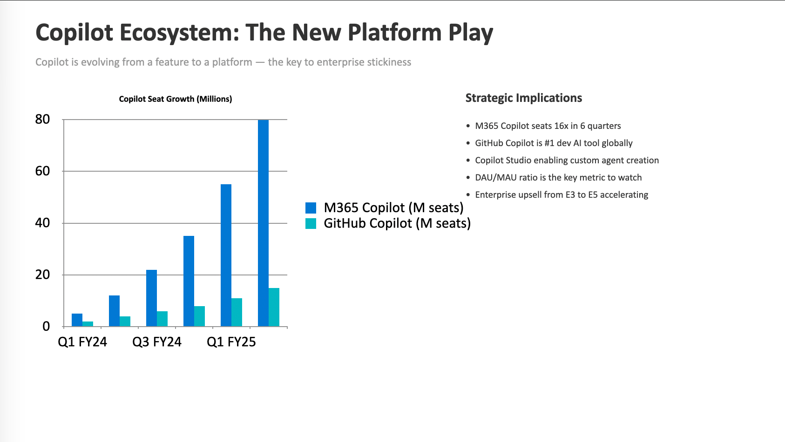
Custom tools · Iterate
Build your own custom tools
The first draft won't be perfect. Give feedback so Claude can learn and do it better next time.
Prompt 1 · Improve the skill
Improve the PPT creator skill to ensure to include a logo on the bottom right. Follow your org's brand guidelines. Include key takeaways on each slide.
Prompt 2 · Run it again
Regenerate the deck.
Improved draft
v2
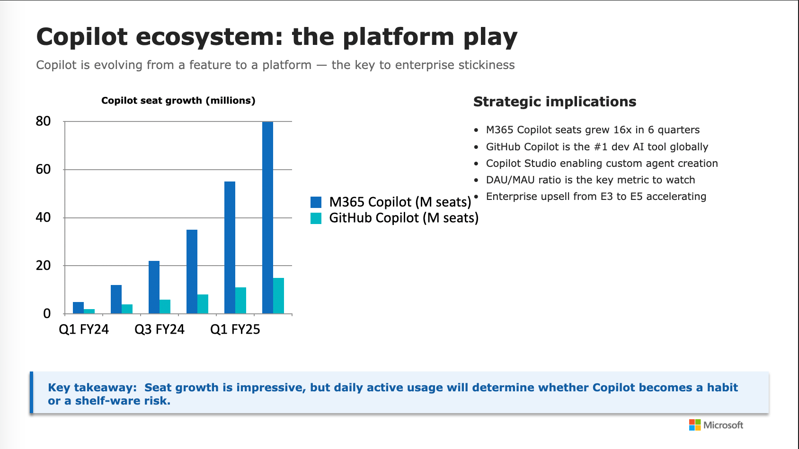
Custom tools · Skill #4 · Email
Build skills that act on other applications
Pre-req: Classic Outlook (or your email client — Gmail API, AppleScript for Mail, etc.)
Prompt to Claude Code
Create a skill to send emails to my colleagues using Outlook COM automation. Ensure the email is richly formatted and fetch email IDs from WorkIQ.
Remember to sign off emails with "Claude on behalf of __________".
Remember to sign off emails with "Claude on behalf of __________".
Review your email
This was the first draft Claude Code made for the Nebula teaser — pulled from your team's meeting contexts.
Plenty of newsletter-automation opportunities once the skill is live.
Generated email
Outlook draft
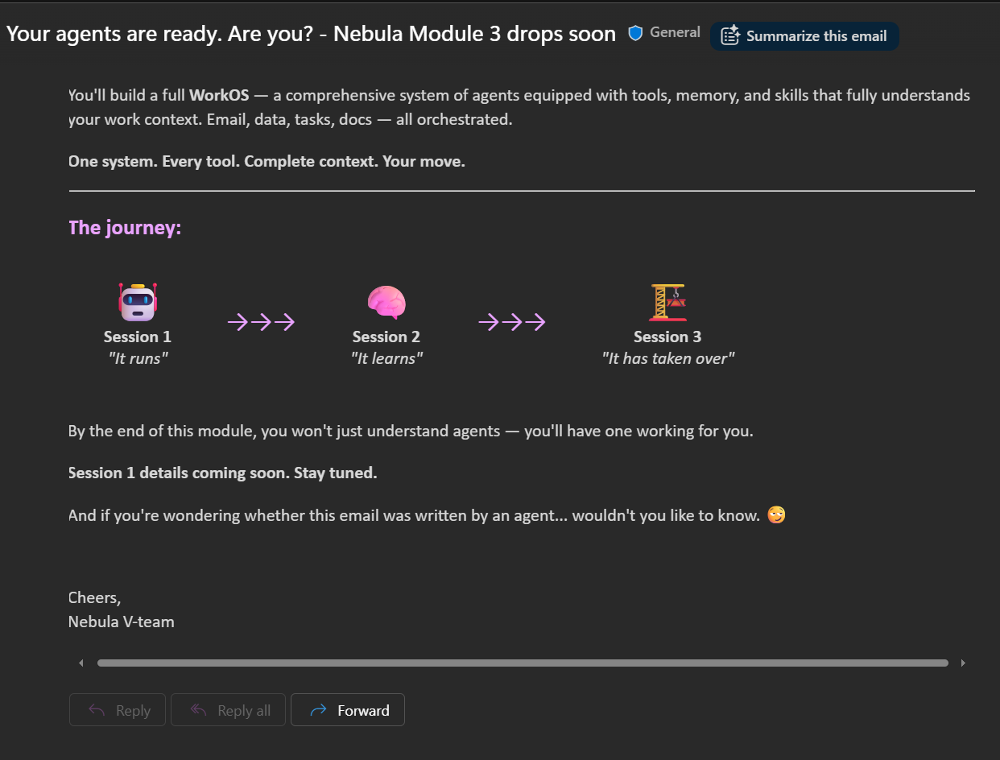
The aha moment
Putting it all together
One prompt. Four skills. Two MCPs. Memory and work-graph routing the rest.
Master prompt
Fetch the latest performance data for my product and create a deck with insights, and prepare a draft to review on Outlook to send to my manager.
Invokes
MCP
Kusto MCP
SKILL
Kusto skill
SKILL
PPT generation skill
SKILL
Email skill
Claude Code
Orchestrates
Picks the right skills + MCPs.
Routes context. Sequences calls.
Routes context. Sequences calls.
Progressive disclosure — only loads what each step needs.
Resolves
My product
Identified from your memory.
My manager · name
From memory or WorkIQ.
My manager · email
Resolved from WorkIQ.
One prompt → orchestrated workflow → reviewed draft in Outlook
An aside
But what about agents?
Before skills existed, all context loading clogged the main agent's window. Skills subsume most of the benefit — but agents still earn their keep in one case.
Context
Claude lets you create custom agents to solve specific problems.
Prior to launching skills, all context loading into the main agent clogged the context window. Agents fixed this by giving each task its own instructions and context.
With the launch of skills, most benefits of building agents separately don't exist — skills cover the same ground with less ceremony.
Where agents still help
Each agent gets its own context window.
For large tasks — e.g. analysing eval test cases — spawn multiple agents so each has its own clean window to work in.
Prompt: Make multiple agents and complete this task…
Map-reduce style: parallel agents, each with their own context, results aggregated by the main thread.
Scope
We will not cover making agents with specific context/instructions — building skills subsumes that.
Session 2 · Recap
Learning recap
Concepts & foundations
Understood how to use context & memory along with their implementation in Claude Code.
Learnt how to navigate the Claude Code CLI interface.
Built a hello world app using Claude Code.
Learnt about MCPs and connected to WorkIQ and Kusto MCPs to fetch external data.
Skills & custom tools
Built skills (progressive disclosure) to ensure Claude has just the right context when calling MCPs.
Built learning systems using skills to make Claude get better every interaction.
Made a skill that leverages custom scripts to generate PowerPoint decks.
Made a skill that leverages other applications on your local — sending email via Outlook.
Next up
In the next session we'll learn how to orchestrate these skills to build your own workOS.
Project Nebula · Module 3 · Session 2
See you soon!